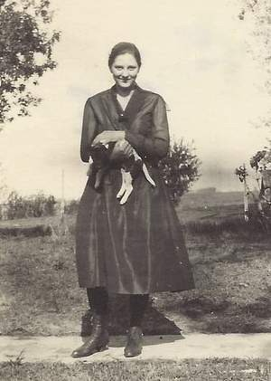

Lillian Winifred Sargent (née Beierle) 1903 - 1995
[ Home ] | [ Calendar ] | [ Surnames Index ] | [ Family History ]Lillian Beierle, the wife of Glen Russel Sargent (the fourth cousin twice-removed on the mother's side of Nigel Horne), was born in Nebraska, USA on Apr 1, 1903<span class="citation">1,2,3</span> andhad 6 children, Harold Glen, Gloria B, Shirley J, Betty Lou, Jack Russel and Marilyn J.</p><p>Throughout her life, she lived at 990 E Street, David City, Butler, Nebraska on Apr 15, 1930<span class="citation">4</span>; and at 979 D Street, David City, Butler, Nebraska on Apr 11, 1940<span class="citation">5</span>. <p>She died on Dec 4, 1995 in David City, Butler, Nebraska<span class="citation">1,2,3</span> and was buried there after Dec 4, 1995<span class="citation">2</span>.
Children
- Harold Glen was born in 1923
- Gloria B was born on Jun 20, 1924
- Betty Lou was born on Feb 26, 1928
- Jack Russel was born on Mar 23, 1932
Citations
- Social Security Death Index - Findmypast
- U.S., Find A Grave Index, 1600s-Current Ancestry.com Operations, Inc.
- United States Billion Graves index - Findmypast
- US Census 1930 - Findmypast (was age 27 and the wife of the head of the household)
- US Census 1940 - Findmypast (was age 37 and the wife of the head of the household)
Media
Lillian Beierle

Glen Sargent - Lillian Beierle
Lillian Beierle 2
Social Security Death Index Transcription - USBMD-SSDI-507500990
1930 US Census Transcription - USC-1930-004951855-00631-009
US Census 1940 - USC/1940/1476344606
US Census 1930 - USC/1930/004951855/00631/010
United States Billion Graves index - US/BMD/BILLION/P8/2049926
Family Trees - FMP/1386165145
Family Tree

Generated by Ged2Site. Last updated on Jul 20, 2025